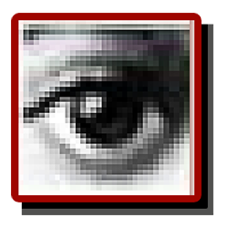

1990Photoshop 1.0

1991Photoshop 2.0

1994Photoshop 3.0

1996Photoshop 4.0

- Adjustment 레이어 추가
- 액션 기능 추가
1998Photoshop 5.0

- 문자편집 기능
- 다중 실행 취소 (히스토리 팔레트)
- 색 관리
2000Photoshop 6.0

- 인터페이스 변경
- 힐링 브러시
- Liquify 필터
- 픽셀유동화 기능
2002Photoshop 7.0

- 모든 문자를 벡터로 처리
- 힐링 브러시 개선
- 그리기 엔진 개선
2003Photoshop CS

- 카메라 RAW 2.x
- Slice Tool 개선
- Shadow/Highlight 메뉴 추가
- Match Color 메뉴 추가
- Lens blur 필터 추가
- 실시간 히스토그램
- 사용자 메뉴 구성
2005Photoshop CS2

- 카메라 RAW 3.x
- 스마트 오브젝트
- 이미지 변형(Image Warp)
- 스팟 힐링 브러시(Spot healing brush)
- 적목 현상 교정
- 소실점
- 노이즈 감소 기능
- HDRI 지원
- 폰트 미리보기
- 레이어 다중선택